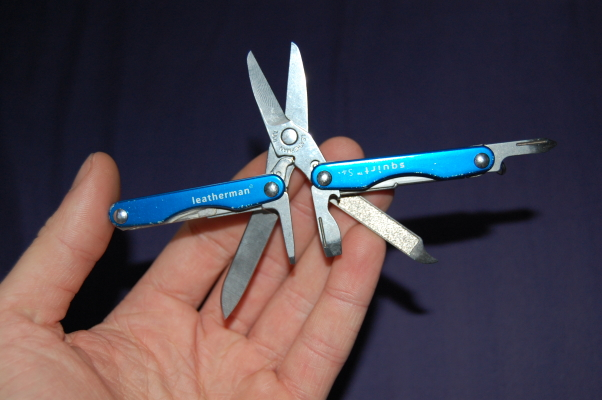

Vakarykštė diena baigėsi ganėtinai įdomiai. Kažkaip tikėjausi, kad važiuosiu namo pernakvoti, o ryte grįšiu. Bevalgant vakarienę, priėjo vienas iš dalyvių ir pasiūlė 21:30 ateiti žaisti Werewolf, kiti du dalyviai, su kuriais valgėm, tą žaidimą žinojo. Aš - ne. Vienas iš jų taip pat planavo važiuoti namo, tad pasakė jog žaidimas per nelyg įtraukiantis, tad jo nežais.
Taigi, susirinkom visi tamsiame kambariuke, aplinka buvo labai tinkama tokiam psichologiniam žaidimui. Kadangi tai buvo mano pirmas žaidimas, nbuvau perpratęs "taktikos". Vienas iš neįtikinamiausių įvykių nutiko, kai mane apkaltino esant vilku. Nutariau nesiteisinti, tik pasakiau, kad aš ne vilkas. Atėjus laikui balsavimui ir moderatorius sako: "Who thinks that he is a werewolf?" Nė vienas iš žaidėju nepakėlė rankos :D Net tie, kurie nominavo mane tai pozicijai :D Moderarius sako: "That was the worst defence ever. I can't believe it worked" :D
Tai toks buvo pirmas žaidimas. Jis truko apie porą valandų. Iš viso per naktį sužaidėm 4. Baigėm pusė 6 ryto :D Sakyčiau, kad žodis "addictive" yra ganėtinai švelnus :D
Šiandien atsikėliau apie 8, pasnaudžiau iki 9. Pavalgėm pusryčius, paklausėm poros kalbų, dabar turiu laivo laiko pabloginti. Namo grįšiu turbūt apie 8, nebent kas nors sugalvos naujų pramogų :D
Tai va. Atėjau 10 valandą į registraciją, buvau nufotografuotas ir užregistruotas. Iki pusės 12 valandos buvo laiko susipažinimui, arbatai ir pan. Paskui ėjom pasižymėti lentelėje. Kadangi laikaus praktikos "greičiau atkalbi - mažiau jaudiniesi", prisegiau savo lapuką 12 valandai.
Turėjau šiokių tokių bėdų su projektorium. Niekad nebuvau jungęs tokio daikto, tad bandydamas pahakinti Linux, sugadinau savo xorg.conf failą :D Vienas iš klausytojų paskolino savo Eee, tad skaidres visdėlto parodžiau. Šnekėjau apie 10 min, o kitas laikas (~20 min) buvo skirtas diskusijoms.
Dabar pavalgiau pietus (davė laznijos), susitvarkiau vaizdą ir galiu nors kiek pabloginti. Jei netingėsiu, namie parašysiu išsamiau, įmesiu nuotraukų.
Pabuvojęs wishlist'e apie 2-3 savaites, šiandien Squirt S4 papuolė į mano kišenę. Įsigijau jį per ebay, iš us pardavėjo, už £12 (a.k.a šem litu), nors naujas uk parduotuvėse kainuoja £30+.

Dabar pasiruošęs karpyt, sukt, atkimšinėt alų ir t.t.
Spėkit kas šiandien gavo bilietą į Barcamp'ą braitone :) Praeitais metais bilietai buvo išgraibstyti per 22 minutes, tad labai džiaugiuosi, kad pavyko užsibookinti. Nekonferencija vyks Kovo 15-16 dienomis, tik prasidėjus Velykų atostogoms (14/03).
It's an 'unconference' bringing
together 150 technologists, of all experience levels, to participate
in discussions, demonstrations and presentations about absolutely
anything the attendees find interesting. It's an intensive two days,
the event, being held on the University of Sussex's campus starts at
10am on Saturday 15th March and continues through the night to 4pm on
Sunday 16th. Food and drink is being sponsored by a collection of
local and international organisations including Yahoo! Developer
Network and Amazon Web Services.
Šiandien darbe pamačiau prie lentynos prilipdytą "kažką". Atplėšiau, bet jėga, kurios reikėjo tai padaryti, iškart priminė apie neodimio magnetus. Internete neradau būdų kaip juos atskirti nuo įprastų, todėl ėmiausi bandymų.
Paėmiau maišelį, įdėjau du sunkius užrašų segtuvus ir prilipdžiau prie lempos. Ir ką jūs manot? Teorija pasitvirtino.
Poto jutubėje nusižiūrėjau, ką žmonės daro su jais ir pasigaminau tokį va dalyką